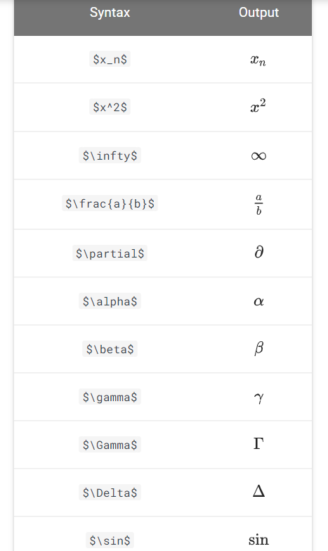

Show code
from IPython.display import Image
Image(filename="/my_icons/latex/latex_common_symbols_1.png")
April 17, 2021
Here in this notebook, we will be looking into “how to write math equations in jupyter notebook”. The reason for writing this notebook is, I want to have all these instructions at once instaed of wrangling around different websites
The math equation cell needs to be in Markdown mode
$ = {0} + {j=1} ^{p} X_{j}_{j} $
$ \hat{y} = \hat{\beta}_{0} + \sum \limits_{j=1} ^{p} X_{j}\hat{\beta}_{j} $- $ : All the Math you want to write in the markdown should be inside opening and closing $ symbol in order to be processed as Math.
- \beta : Creates the symbol beta
- \hat{} : A hat is covered over anything inside the curly braces of \hat{}. E.g. in \hat{Y} hat is created over Y and in \hat{\beta}_{0}, hat is shown over beta
- _{} : Creates as subscript, anything inside the curly braces after _. E.g. \hat{\beta}_{0} will create beta with a hat and give it a subscript of 0.
- ^{} : (Similar to subscript) Creates as superscript, anything inside the curly braces after ^.
- \sum : Creates the summation symbol
- \limits _{} ^{} : Creates lower and upper limit for the \sum using the subscript and superscript notation.
- *** : Creates horizontal line
-   : Creates space. (Ref: Space in ‘markdown’ cell of Jupyter Notebook)
- \gamma : Creates gamma symbol
- \displaystyle : Forces display mode (BONUS 3 above). (Ref: Display style in Math mode)
- \frac{}{} : Creates fraction with two curly braces from numerator and denominator.
- <br> : Creates line breaks
- \Bigg : Helps create parenthesis of big sizes. (Ref: Brackets and Parentheses)
- \partial : Creates partial derivatives symbol
- \underset() : To write under a text. E.g. gamma under arg min, instead of a subscript. In the algorithm you’ll see both types.
- \in : Creates belongs to symbol which is heavily used in set theory.$$f'(a) = \lim_{x \to a} \frac{f(x) - f(a)}{x-a}$$\[f'(a) = \lim_{x \to a} \frac{f(x) - f(a)}{x-a}\]

Create a matrix without brackets:
$$\begin{matrix} a & b \\ c & d \end{matrix}$$\[\begin{matrix} a & b \\ c & d \end{matrix}\]
Create a matrix with round brackets:
$$\begin{pmatrix} a & b \\ c & d \end{pmatrix}$$\[\begin{pmatrix} a & b \\ c & d \end{pmatrix}\]
Create a matrix with square brackets:
$$\begin{bmatrix} 1 & 2 & 1 \\ 3 & 0 & 1 \\ 0 & 2 & 4 \end{bmatrix}$$\[\begin{bmatrix} 1 & 2 & 1 \\ 3 & 0 & 1 \\ 0 & 2 & 4 \end{bmatrix}\]
Use \left and \right to enclose an arbitrary expression in brackets:
$$\left( \frac{p}{q} \right)$$\[\left( \frac{p}{q} \right)\]
*emphasis*, **strong**, 'code'emphasis, strong,code
<b>This is bold text </b>
** This is bold text
--This is bold textThis is bold text
**This is bold text
__ This is bold text
# H1
## H2
### H3
#### H4
##### H5
###### H61. Number theory
2. Algebra
3. Partial differential equations
4. Probability* Number theory
* Algebra
* Partial differential equations
* Probability- Fish
- Eggs
- Cheese<ul>
<li>Fish</li>
<li>Eggs</li>
<li>Cheese</li>
</ul>1. Mathematics
* Calculus
* Linear Algebra
* Probability
2. Physics
* Classical Mechanics
* Relativity
* Thermodynamics
3. Biology
* Diffusion and Osmosis
* Homeostasis
* Immunology| Python Operator | Description |
| :---: | :---: |
| `+` | addition |
| `-` | subtraction |
| `*` | multiplication |
| `/` | division |
| `**` | power || Python Operator | Description |
|---|---|
+ |
addition |
- |
subtraction |
* |
multiplication |
/ |
division |
** |
power |